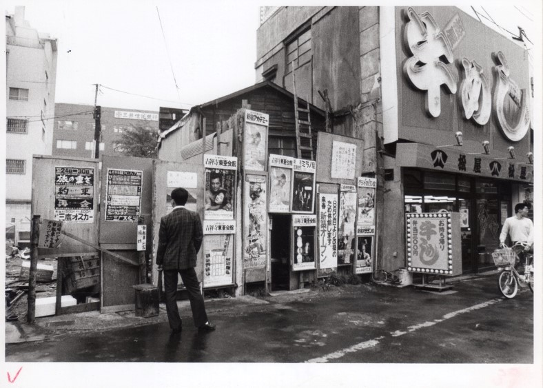
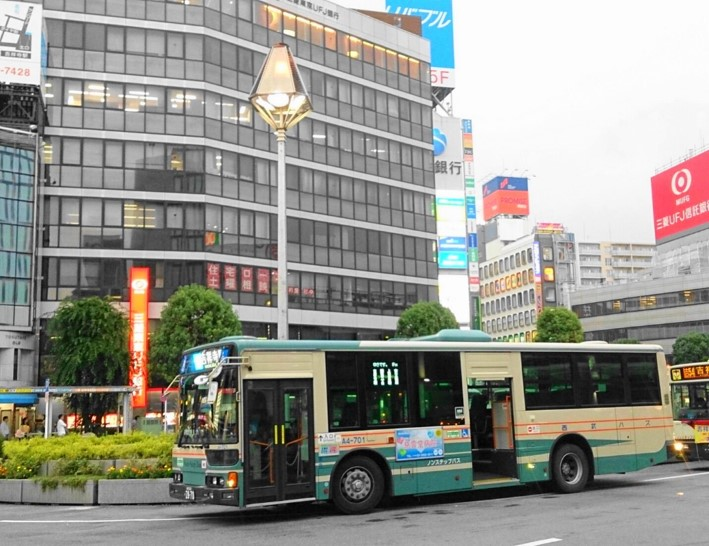

吉祥寺駅北口バスロータリー


現在の吉祥寺駅北口バスロータリーには、かつて三角地帯と呼ばれた場所があった。この写真はその一部である。吉祥寺駅北口駅前広場の整備事業は1966（昭和41）年に決定されたが、その後、遅々として進まなかった。買収契約が結ばれたところから建物の撤去がおこなわれ、最初は密集していた店舗が、櫛の歯が抜けるように徐々に空き地化していった。この写真からもその様子がうかがわれる。すべての買収契約が完了したのは1985年11月のことであり、1986年３月頃から三角地帯の取り壊しがはじまり、1987年３月に現在の北口駅前広場が完成した。
吉祥寺駅北口の牛めし松屋の写真はさまざまな写真集にも取り上げられており、この大きな看板が吉祥寺駅前でかなり目立っていたことがうかがわれる。隣の空き地にはベニヤ板が立てられ、多くの映画ポスターが貼られている。その中には三鷹の映画館「三鷹オスカー」のポスターも見られる。これらの映画の公開日から、この写真が撮影されたのは1979年の４月ごろであると推定される。かつて、吉祥寺には多くの映画館が存在しており、石川コレクションには街中に貼られた映画のポスターや映画館を写したものが他にもたくさんある。映画は今よりもずっと身近な存在だったのだろう。